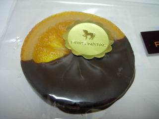
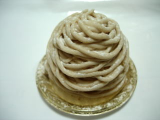

ペイナタルのヴァランシア
更新日 : 2009/12/24
ここの洋菓子屋さんはショコラを売っているんですね。
ベレンタインの時とかにはちょっとお高いベルーギ産のチョコを買ったりするんですが、洋菓子屋さんで美味しいチョコがあるといいですよね。

オレンジのチョコって美味しいですよね。輸入チョコじゃ出来ないような感じのチョコなのもいいですね。甘すぎず美味しかったです。
島根県松江市北田町41
更新日 : 2009/12/24
ここの洋菓子屋さんはショコラを売っているんですね。
ベレンタインの時とかにはちょっとお高いベルーギ産のチョコを買ったりするんですが、洋菓子屋さんで美味しいチョコがあるといいですよね。

オレンジのチョコって美味しいですよね。輸入チョコじゃ出来ないような感じのチョコなのもいいですね。甘すぎず美味しかったです。
更新日 : 2009/12/23
10月にオープンした新しいケーキ屋さんに行きました。
とっても甘いマカロン風のベースの上に、クリームがたっぷり乗ったモンブランです。

スポンジとか入ってなくて、美味しいクリームがいっぱいあるのは嬉しいですね。味が濃く甘くなりますが、私は好きです。